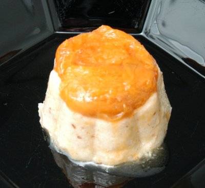

| Zutaten für 4 Personen: | |
| 400 g | Aprikosen |
| 1 dl | Wasser |
| Zucker | |
| 80 g | Mandeln gerieben |
| 3 Tassen | Milch |
| 1/2 Tasse | Griess |
| 2 Blatt | Gelatine |
| 1 1/2 dl | Rahm |
Die Gelatine in kaltes Wasser legen, aufweichen lassen
Aprikosen waschen, halbieren und entsteinen. Das Wasser mit 3 EL Zucker aufsetzen und die Aprikosen darin nicht allzu weich kochen. In einer Salatschüssel erkalten lassen.
Die Milch mit den geriebenen Mandeln und 4 EL Zucker zum Kochen bringen, den Griess im Faden langsam einlaufen lassen und ca. 10 Minuten leise kochen lassen.
Den Topf vom Feuer ziehen, etwas erkalten lassen.
Die Hälfte der flüssigen Sahne darunter mischen.
Die Gelatine kräftig ausdrücken und in wenig heissem Wasser gänzlich auflösen. Dann die aufgelöste Gelatine in die Masse einrühren.
Die Masse in eine Kranzform oder einen Reisring einfüllen und im Kühlschrank ca. 1 Stunde erkalten lassen.
Form aus dem Kühlschrank nehmen, kurz in heisses Wasser tauchen und den Mandelpudding stürzen. Einige Aprikosenhälften in feine Scheiben schneiden, damit den Pudding garnieren. Die Aussparung in der Mitte mit halben Aprikosen auffüllen, den Rest getrennt in einer Schale anrichten und zusammen mit dem Pudding servieren. Die restliche Sahne steif schlagen und als Garnitur einige Schlagsahnetupfen aufsetzen.
Herbert Eigenmann, Code: APF
Irgendwie werde ich nicht so ganz schlau aus dem Rezept was man in einer Schüssel und wo wann reinmachen soll. Habe daher improvisiert und die Caramelköpfli-Formen abgestaubt. Da kamen zuerst ein bisschen Aprikosen rein und dann die Schlabbergrütze. Nach einer Weile im Kühlschrank behält das auch die Form und schmeckt geniessbar. RE 19.5.2008
@LINKBACK_TAG@ @WAKELOCK@